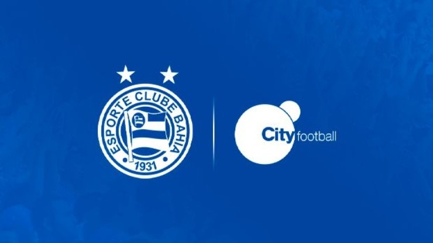
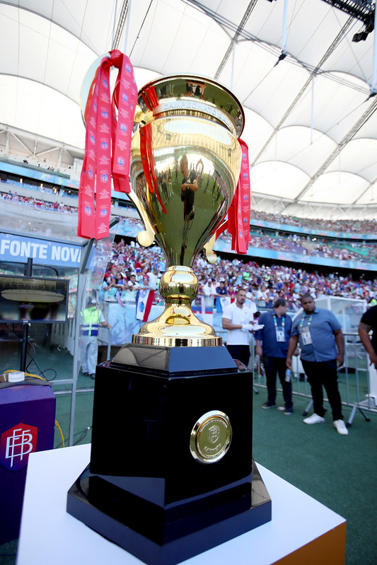
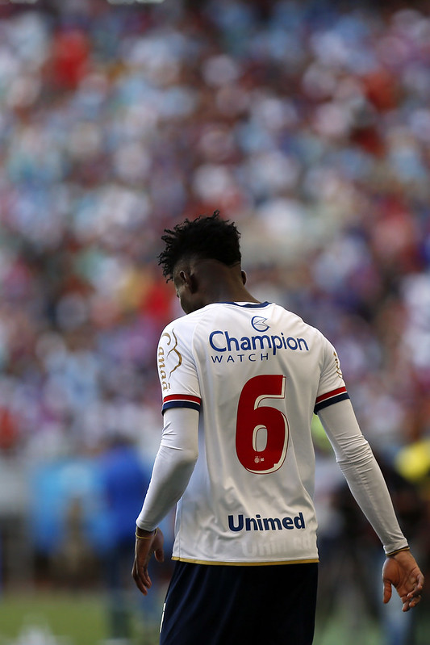
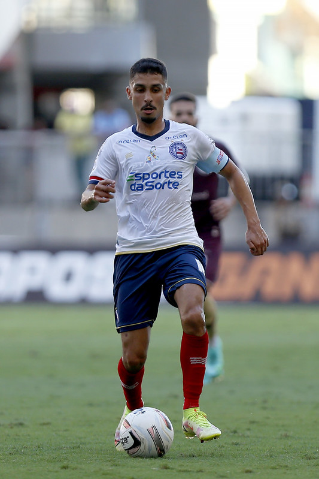
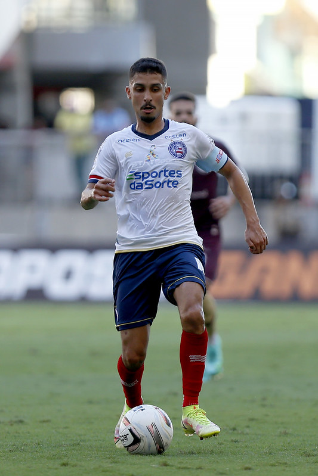
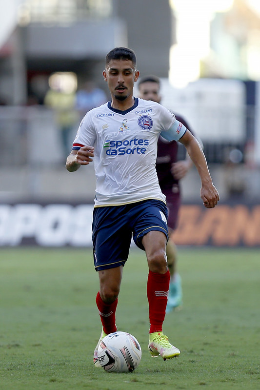

SOBRE O CLUBE

O Esporte Clube Bahia é um clube desportivo brasileiro de futebol da cidade de Salvador, na Bahia.
Conhecido simplesmente como Bahia ou pela sigla ECB, foi fundado em 1º de janeiro de 1931 por ex-jogadores
do Clube Bahiano de Tênis e a Associação Atlética da Bahia. Foi o primeiro clube a conquistar o Campeonato
Brasileiro de Futebol, em 1959, contra o Santos. O clube também foi o primeiro representante brasileiro a
participar de uma edição da Libertadores, em 1960. Em 1988, o tricolor baiano conquistou seu segundo título
brasileiro, desta vez derrotando o Internacional. Com tais títulos, o Bahia é o único clube fora do eixo
Sul-Sudeste a deter dois títulos nacionais da principal divisão do futebol brasileiro. Atualmente, o clube
foi adiquirido pelo City Football Group.
ELENCO

ADEMIR
ATACANTE
KAYKY
ATACANTE
RAUL GUSTAVO
ZAGUEIRO
RAUL GUSTAVO
ZAGUEIROGALERIA


 

Instagram: @felipeoliveirafotografo
